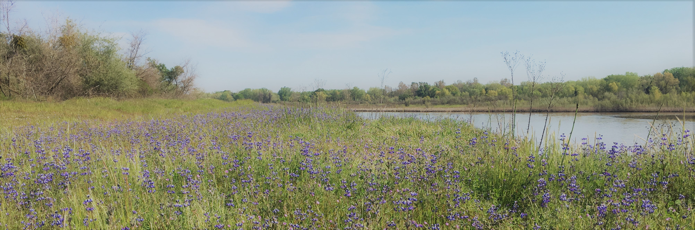

2018 Bay Area Conservation Biology Symposium
Overcoming Barriers to Conservation
Hosted by University of California, Davis SCB Chapter
May 12th, 2018
Geidt Hall, UC Davis Campus
Welcome! We are pleased to announce that this years annual Bay Area Conservation Biology Symposium will be hosted by the University of California Davis, with keynote speaker Dr. Ellie M. Cohen of Point Blue Conservation Science.
Please join us on May 12th 2018 for our conference themed “Overcoming Barriers to Conservation.” Please use this site to register, submit you abstracts, and submit art entries, as in addition to both poster and presentation sessions, we will also have an art competition where attendies are welcome to submit their art (see the registration tab for more information).
